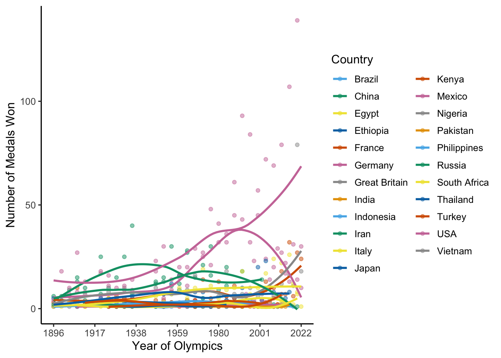

knitr::opts_chunk$set(echo = TRUE, message = FALSE, warning = FALSE)Homework 2 - dynamic graphs
Data
The dataset used is from Kaggle and can be found here. It is the historical dataset on the Olympic Games, including all the Games from Athens 1896 to Beijing 2022. The dataset includes results, medals, athletes, and hosts. The rest of this project utilizes the olympic_medals spreadsheet.
The figures show that the USA team continues to increase the number of gold medals they take home over the years.
I chose to look only at the top 23 countries by population - I used a few websites to confirm this - to make it easier to see if there was an increase in the number of gold medals taken home by the USA over the years. I colored by the country because it makes it easier to identify specific countries and I initially was trying to work in the event_gender variable but the legend ended up being larger than I wanted because it listed out each country, gender combination.
Data Clean-Up
setwd("~/Desktop/STAA566/Assignment2")
library(ggplot2)
library(tidyverse)
library(dplyr)
library(ggthemes)
library(plotly)
library(htmlwidgets)
olympicMedals <- read.csv("olympic_medals.csv", header = T)
olympicGold <- olympicMedals[olympicMedals$medal_type =="GOLD",]
olympicGold$country_name[olympicGold$country_name == "Federal Republic of Germany"] <- "Germany"
olympicGold$country_name[olympicGold$country_name == "German Democratic Republic (Germany)"] <- "Germany"
olympicGold$country_name[olympicGold$country_name == "Hong Kong, China"] <- "China"
olympicGold$country_name[olympicGold$country_name == "People's Republic of China"] <- "China"
olympicGold$country_name[olympicGold$country_name == "Islamic Republic of Iran"] <- "Iran"
olympicGold$country_name[olympicGold$country_name == "Olympic Athletes from Russia"] <- "Russia"
olympicGold$country_name[olympicGold$country_name == "Russian Federation"] <- "Russia"
olympicGold$country_name[olympicGold$country_name == "United States of America"] <- "USA"
names(olympicGold)[names(olympicGold) == 'slug_year'] <- 'year'
olympicSummary <- olympicGold[olympicGold$country_name =="Brazil" |
olympicGold$country_name == "Egypt" |
olympicGold$country_name == "Ethiopia" |
olympicGold$country_name == "Germany" |
olympicGold$country_name == "France" |
olympicGold$country_name == "Great Britain" |
olympicGold$country_name == "China" |
olympicGold$country_name == "India" |
olympicGold$country_name == "Indonesia" |
olympicGold$country_name == "Iran" |
olympicGold$country_name == "Italy" |
olympicGold$country_name == "Japan" |
olympicGold$country_name == "Kenya" |
olympicGold$country_name == "Mexico" |
olympicGold$country_name == "Nigeria" |
olympicGold$country_name == "Russia" |
olympicGold$country_name == "Pakistan" |
olympicGold$country_name == "Philippines" |
olympicGold$country_name == "South Africa" |
olympicGold$country_name == "Thailand" |
olympicGold$country_name == "Turkey" |
olympicGold$country_name == "USA" |
olympicGold$country_name == "Vietnam",]Create Graphs
olympicS<- olympicSummary %>%
count(year,country_name)
o_gm <- ggplot(data = olympicS,
mapping = aes(x = year,
y = n,
color = country_name)) +
geom_point(alpha = 0.5) +
geom_smooth(method = "loess", se = F) +
ylab("Number of Medals Won") +
xlab("Year of Olympics") +
scale_x_continuous(breaks = seq(1896, 2022, by = 21)) +
guides(color = guide_legend(title = "Country")) +
scale_color_pander() +
theme_classic(base_size = 12)
o_gm
o_gm_plotly <- ggplotly(o_gm) %>%
layout(legend = list(x = 1, y = 0,
xanchor = 'right',
yanchor = 'bottom'))
o_gm_plotlyCreate Graph 2
olympicS_highlight <- highlight_key(olympicS, ~country_name)
o_gm_hl <- ggplot(data = olympicS_highlight,
mapping = aes(x = year,
y = n,
color = country_name)) +
geom_point(alpha = 0.5) +
geom_smooth(method = "loess", se = F) +
ylab("Number of Medals Won") +
xlab("Year of Olympics") +
scale_x_continuous(breaks = seq(1896, 2022, by = 21)) +
guides(color = guide_legend(title = "Country")) +
scale_color_pander() +
theme_classic(base_size = 12)
o_gm_hlo_gm_hl_plotly <- ggplotly(o_gm_hl) %>%
highlight(on = "plotly_hover",
off = "plotly_relayout",
color = "black")
o_gm_hl_plotlysaveWidget(as_widget(o_gm_hl_plotly), "o_gm_hl_plotly.html")
save(o_gm_hl_plotly, file = "o_gm_hl_plotly.rda")